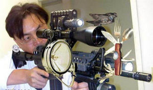
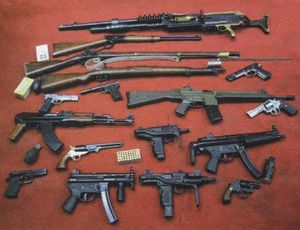

Call of Duty: Modern Warfare 2
 De: La Frikipedia, la enciclopedia extremadamente seria.
De: La Frikipedia, la enciclopedia extremadamente seria.
De la serie Videojuegos:
Call of Duty: Modern Warfare 2

mira como vamos corriendo
| Desarrollado por:
|
Infinity Ward
|
| Distribuido por:
|
Tu padre con la ayuda de su camión
|
| Diseñado por:
|
Agatha Ruiz de la Prada
|
| Motor
|
de 8 valvulas
|
| Género(s)
|
De los de sangre
|
| Fecha de lanzamiento:
|
¿De jabalina te parece bien?
|
| Modos de juego:
|
Campaña, Coperativo (o solo), Online
|
| Requisitos:
|
No ser ciego, si no lo eres lo serás...
|
| Disponible en:
|
Tu portal de descargas más cercano
|
| Formatos:
|
Din A4
|
| Edades:
|
+18 (Pero quien le hace caso a eso)
|
| Puntuaciones:
|
de sutura
|
la guerra no es juego de niños
«Sin duda, el juego más esperado del año. Lástima que lo hayan metido en ese mojón llamado Steam.»
~ ' Lo que mucha gente piensa
La gran secuela del afamado Call of Duty 4, "Modern Warfare" al cual todo friki debe haberse viciado, o como mínimo haberse pasado la campaña... (En caso de que no conocieses este juego suicídate y esparce tus cenizas por el vertedero de tu pueblo). Este juego trata sobre armarse hasta los dientes y adquirir habilidades sobrehumanas como no hacerte daño de una caida de 30 metros, hacer un blink strike, ver a través de las paredes las minas, revivir, aguantar 800 balas antes de morir, hacer un no scope a 157 metros de distancia, que los enemigos te disparen y te dejen gravemente herido, pero que con un par de segundos ya estas tan feliz pegando tiros... infiltrarse en bases soviéticas de alta seguridad, sólo porque hay ventisca y después salir tan contento sin en realidad haber hecho una mierda... entre otros...
Tipos de jugadores
De entre todos los tipos de jugadores se pueden distingir:
- Camper: El 70% de los que juegan Modern Warfare 2 son absolutamente campers. No hay una sola partida en la que no hayan algunos de estos especímenes(Se suelen subir a los tejados con armas con miras muy tochas), cuyos logros en muertes son obsequiados con frases como "fucking camper", "noob camper", "Your fucking mother give me her ass every night" o "Demolemole caunnn...". Para los que no conozcan que es un camper: Dícese de aquella persona que,como vil cucaracha, se mete en rincones oscuros esperando el momento de atacar por la espalda.
- Noobtuber: Clase también bastante extendida. Consiste en la persona que acopla un lanzagranadas a cualquier SCAR, Ak-47, zanahorias, vibradores o cualquier cosa cilíndrica capaz de soportarlo, por la sencilla razón de que es el arma noob por excelencia, ya que de un tiro matas instantámeamente a tu objetivo (eso se ha demostrado que es totalmente falso), además hace daño en un área (lo cual es excelente para todo aquel bicho viviente con extremidades articulables, para lanzarte una granada desde la otra punta del mapa mientras tomas las banderas en Domination. Y, por arte de magia, acertar o simplemente porque lo hacen amenudo...), por tanto es más noob aún que la escopeta rápida del Cs 1.6.
- Pro: Especie rara en este juego, es el jugador que en 10 segundos ya tiene un pave low, un apache y no dudes de que soltará una nuke( o bomba nuclear) para poner fin a la partida. Sueler tener las perks de maratón, línea dura y comando o algo por el estilo. Siempre va corriendo de un lado para otro y todos caen a sus pies( usa bastante el cuchillo [Típico tio al que estas disparando de frente pero viene corriendo y te acuchilla antes de morir].
- Noob: Persona a nivel 1, que no sabe que el movimiento se efectúa con las teclas "w a s d" y se mueve con las flechas de dirección, usa solo las clases predeterminadas aún cuando esta a nivel 70, No sabe a que botón darle para activar las recompensas de bajas, no tiene ni puta idea de lo que es prestige, ect. Tipica persona a la cual le pegas un tiro y entra en estado de panico, a partir de ahi pueden ocurrir dos cosas, o se tira al piso y no se mueve(en realidad esta que se caga de la desesperación), o se vulve loco e intenta vaciar el cartucho en todas las direcciones que le permita el ``yoistik´´(LOCURA). Por lo que asume su inutilidad y metamorfosea inmediatamente en CAMPER.
- Bomberman: son noobs que devido a que los camper los han matado demasiadas veces ya ni les importa la partida su unico objetivo es volar a gente por los aires dandoles totalmente igual si ellos mueren en el acto sus armas favoritas son lanzagrandas con cualquier arma que lleve debajo,javelin,rpg y cualquier cosa que explote a veces esperimentan el matar a la gente con granadas de luz tienden a tener una gran punteria con el rpg incluso si sus enemigos son muy noobs los matan de 5 en 5.
- Sniper: estos son pros especializados en la sniper. En consecuencia, te matan a ti, a los seres que tú mas quieres y al que tengas detras de un disparo. a diferencia de los noobs, estos va a saco y disparan sin pestañear como si llevaran un fusil de asalto. Son capaces de enfrentarse a un ejercito con una sniper sin fallar por lo que no es aconsejable atacarles de frente se puede ver quien es pro con la sniper por que ná mas te asomes habrás muerto sin saber quien te dio. Pero en cambio, el noob sniper necesita dos cargadores de su barret para hacerte el mismo daño que harian las heces de una mosca disparadas sobre un hombre de 1,80.
Armas
 Un rifle de asalto liviano de Call Of Duty.
Instrumento bastante imprescindible para dar muerte a cuanto ser se ponga delante. Su uso puede darte la victoria, pero sin ellas, te van a meter palos hasta el día de Nochevieja, en el caso de que leas esto en Nochevieja o falte poco para ella, te meterán palos hasta la siguiente Nochevieja. Bueno vamos al grano. Las clases de armas son:
- Rifles de Asalto: Se dividen en: M4 Carbine, FAMAS( De ráfagas), SCAR-H(La mejor al principio), TAR 21, FAL(La que hace pin pin pin), M16 (Esta hace ratata, ratata), ACR (Esta hace trrrrrr y te mata), F2000 y Ak-47 (Apodada el rifle de asalto francotirador, ya que de dos balas mata. PD: Es bastante triste ponerle a este pedazo de arma un noobtuber).
- Sub Machine Guns: Son la MP5K, UMP.45 (simplemente la mejor del juego, siempre y cuando la lleves con silenciador, si no, es una porquería grandiosa... cosas de la vida...), Vector (la peor del juego, JAMÁS la cojas, las balas duran 0'0000001 seg. en agotarse), P90 (La fosfiiina) y la Mini-Uzi. Si alguien se pilla alguna de estás armas o las pone duales o es
gilipollas que prefiere otras ventajas.
- Ametralladoras ligeras: Que alguien me explique esto: Por que coño se llaman ligeras??? Si son mas tochas que el culo de mi abuela! Es el tipo de arma que pone a cien a Rambo, Por Diox!! Son: L86 LSW, RPD, HK MG4, AUG HBAR (La Bull Pup de toda la vida[Del Counter]), M240 (La más tocha de todas).
- Rifles de Francotirador: Armas para los sniper (Que son CAMPERS con Francotirador) y son: Intervención (De cerrojo y la cosa más lenta que jamás haya existido, pero mete buenos pepinos y no se porque la lleva todo el mundo,(yo el primero y con muchos cholazos) Como falles el tiro, habrase visto tal cagada de arma, Barrett.50CAL (Típica de este juego)pega unos buenos pepinazos seguidos(Es muy triste disparar como una ametralladora este rifle, pues te llamarán noob, manco y peores cosas), WA2000 (la que no coje ni Dios) y M21 EBR (La llevas en la campaña cuando acompañas al capitán bigotitos).
- Escudo Antidisturbios: Es el arma noob en modo extremo,ya que rebota las balas y mata de un golpe, pero no pasa así en el juego normal asique a no ser que seas un FLIPAO no te lo pongas por el amor de Diox.
- Pistolas Ametralladoras: Ahora entramos con las armas secundarias y empezamos con las pipas estas que son más imprecisas que disparar con un franco al presidente de EEUU y matar al Papa. Son: PP2000 (La primera y sin embargo, la mejor de todas,
tocate la polla), Glock 18 (Si, el dieciocho es un número mágico, hace que puedas beber legalmente, fumar, conducir, y transforma la glock del Counter en una ametralladora), M93 Raffica (Es la cosa más rara que he visto en mi puta vida. Parece un micrófono jirafa), TMP (tiene menos balas que tu en tu casa).
- Escopetas: SPAS (Ya está, el mejor arma del juego,mata de un tiro a una distancia de 10m.
Si no se lo creen chupénme la polla.), AA12 (Un arma bastante OVER,dispara 10 cartuchos por segundo y va por cargadores)de que te das cuenta, las balas se han acabado, Striker ( Versión en escopeta de la Thompson, tócate.), Ranger (Escopeta que se usaba hace 200 años, creí que esto era Modern Warfare,no Older Warfare), M1014 (Versión Rápida de la SPAS,pero no mete ni tanto ni tan lejos además tiene forma de vibrador) y las Modelo 1887 (Otra antiguedad).
- Revólveres: amos, las pipas. Son USP.45(Típica arma mierda que nadie quiere pero sin embargo hay gilipollas que se las equipan), 44. Magnum (La única pipa que merece la pena, típico revólver del oeste), M9 (Un arma flojilla) y Desert Eagle (El arma más imprecisa jamás vista).
- Lanzacohetes: Son normalmente usados para derribar a los copters, chopper gunners y demás escoria voladora. Son AT4-HS(Una mierda, solo tiene un cohete, pero los pros lo usan como sustituto de noobtuber por que mata a unidades de tierra también),
Thumper NOOBTUBER v.2, Stinger (Solo derriba cosas de aire), Javelin (Se usa para vehículos pero hay flipaos que lo usan a modo de misil PREDATOR.) y RPG7(Típico).
- Cuchillo: Es el arma más flipada de este juego (Aparte del escudo) mata de forma instantánea e indolora. Se trata de un arma que tiene punta y corta, por lo tanto ES 800 veces más peligrosa que cualquiera de las anteriores. Tiene su lógica, oye.
Recompesas por rachas de bajas
Su uso nos puede dar la victoria, a no ser que seas un manco, (cómo IP anónima) vamos allá:
- UAV: Cosa que todo Dios se pone y es simplemente ver a los enemigos en el mapa, (Por lo cual ya puedes detectar campers, pero hay una ventaja llamada Sangre Fría, que es muy diver).
- Paquete de Ayuda: Muy útil. Es un paquete mágico e indestructible (COMPROBADO) del que sale cualquier cosa (Menos una nuke, obiamente)cae del cielo por arte de magia y casi siempre da patéticos UAV o UAV de respuesta (Hay casos NO comprobados de que salió una torreta o un misil Predator, pero vamos eso es mentira)
- UAV de Respuesta: Es una puta chorrada que sirve para qe haya interferencias en los radares enemigos, por medio de ondas retoractivas de Plutón.
- Torreta: Típica Sentry del Tf2, pero con un estilo más realista y que ella solita sabe disparar a los monigotes del otro bando, hasta que algún mamón la pilla por detrás y se la carga.
- Misil Predator: Un misil lanzado por Chuck Norris desde la otra punta del planeta y que controlas tu para que haga BOOM y salgan muchas tripas volando. Volando vengo, por el caminoooo, yo me entretengo! (Eso es lo que se oye poco antes del impacto de un misil Predator, después... silencio)
- Ataque aéreo: Unos cazas que lo bombardean todo y destruyen todo en una línea, eso parece, pero después es una real mierda.
- Ataque Harrier: Versión del ataque aéreo en la que un piloto se pierde y se queda parado en mitad del aire intentando buscar el camino. Como el piloto se aburre, mientras busca se pone a matar gente, excepto al pelapatatas que lo llamó
- Helicóptero Cobra: Helicóptero que siempre te lo peta algún mamón cuando ni habías acabado de construir el bar. Está pilotado por John Cobra (el pobre se canso de hacer el ridículo y que ahora quiere demostrar lo que vale ¿matando gente? curiosa manera de demostrar lo que uno vale poniendose a la altura de George W. Bush...
- Lanzamiento de emergencia: Caen 4 paquetes mágicos. Cuidado de donde los lanzas que hay mucho buitre suelto por ahi... Además, siempre se te caerá uno fuera del mapa o se quedará en un edificio (Demostrado)
- Pave Low: Versión del helicóptero del Cobra pero a lo bestia...resiste dos pepinazos y mata a los enemigos como un campeón.
- Bombardero: Llamas a un avión con una forma rarísima que parezca que está hecho de papel que lanza penes por doquier.
- Chopper Gunner: No, no se trata del Reno de One Piece armado con pistolas, sino de un helicóptero pilotado por tí que parece un mini jueguecito. Nota: se mueve más que una pared cuando bebes vodka.
- AC130: Es un avioncito de 560 km de diámtero aparentemente inofensivo, que desde el aire lo ves todo muy sencillo lanzalo bolitas blancas, pero que en el exterior mete unos trabucazos de la Virgen como el mataor de Motilleja el dia del cerdo, aunqe te metas en una casa, vas a acabar en las Fallas Valencianas (olé)
- Bomba Nuclear o Tactical Nuke(En idioma de GRINGOLANDIA): ¡La setaaaa! Es una cosa que acojona mucho y que dices: mierda ahora que iba a matar a este y sirve para acabar la partida. Curiosidad: No mata a las gallinas ni a alguien que en ese momento esté abriendo un maletín como el del Predator (COMPROBADO). La gente farda de que tira nucleares aunque luego se sabe que es una mentira del típico fantasma que va de pro y es un noob (hackers) (vease en las definiciones).
Equipo
 Como verás, éste juego no es apto para pacifistas
En caso de estar acorralado pueden ayudarte en caso de que seas un campero pueden ayudarte tambien dependiendo de lo que quieras hacer con ello.
- Granada: una granada. Hace pupa cuando la explotas.
- Granada setmex: igual que la anterior salvo que esta tiene mocos pegados y se adiere a cualquier cosa que toque es la mejor en caso de que quieras matar al noob que lleva el escudo antidisturbios.
- Cuchillo arrojadizo: como el cuchillo normal salvo que lo lanzas donde toca si toca a alguien mata automaticamente puede atravesar un casco militar como si nada por consecuencia es un arma mortal normalmente lo llevan los noobs con escudo antidisturbios.
- Claymore: La mejor amiga del campero ya que si alguien no la ve acabara reuniendose con dios.
- Inserción tactica: su funcinamiento es tan aburrido que me voy ahorrar las esplicaciones.
- C4: tambien un arma noob a veces usada por pros para eliminar a un grupo de insufribles camperos.
Ventajas
Las ventajas se clasifican por AZULES, ROJAS o AMARILLAS:
- Azules: Maratón(Te vuelves Jamaicano y corres como la puta madre), Presdigitación (Te metes un chute de anfetas y lo haces todo a cámara rápida menos correr), Carroñero (Comes animales muertos), Brillante (Te limpias con Don Limpio (El algodón no engaña, se llena de mierda)) o Camaleón (sirve para que los camper se cambien el puto franco en buscar y destruir a una AK y te maten, que gente más maja jeje... ah, si, también sirve para cambiar de color dependiendo del fondo).
- Rojas: Penetración de las balas (Lo más porno del juego), Paso ligero (te meten una sonda anal por e culo a lo Eric Cartman y empiezas a correr como alma que lleva el diamo), Línea Dura (Llevas una dieta seria comiendo Special K), Sangre fría (Eres invisible a todo Radar máquina o Polla voladora, pero tienes que sacrificar tu virilidad al volverte un reptil y un camper) y Peligro Cercano (Con una bala vuelas una casa,y no, no detecta a Chuck Norris).
- Amarillas: Comando (No te haces daño de caídas y matas a cualquier espécimen humano a una distancia de 19 km con una mierda de cuchillo), Informe de situación (Obtienes el poder de Superman de ver a través de las paredes y cosas en rojo), Ninja (Te dejan llevar shuriken de adorno, y te dan una beca para estudiar en la aldea oculta de la hoja), Puntería estable (se supone que disparas mejor desde la cadera, ideal para noobs con escopetas en Favela... ironías de la vida), Desmodulador (Este, personalmente, me parece un poco mierda,no?... sirve para que el radar ese raro de los enemigos se vaya ar carajo y sepan que vas aparecer y que te maten) Last-Stand o Ultimo combate (ideal para camper.Cuando te mueres no te mueres, te pones en una posturita bastante gay con una pistola que siempre es la misma y no se sabe de donde coño la sacas, y sirve para que dures un segundo más porque no te da tiempo a matar nada)
Campaña
En la campaña, tu eres o un soldado de los EEUU aunque también podría ser de Albacete, llamandose Ramírez... o Roach de la puta fuerza 141, o Soap (parece que le marco de por vida la corta estancia en prisión...), el que le clava un cuchillo en el ojo al malo. Tu misión inicial consiste en detener a Makarov, un rumano cabreado con el estado por no permitirle la convivencia de 30 personas en un pisito de alquiler de 45 m2. En esta hazaña tendrás que matar malos, matar malos, matar civiles, matar malos, y siempre en lugares y con maneras distintas. Después un señor con bigote y revólver pasa a ser el malo. Tiene tan mala leche que te quema a ti y a Ghost vivos para encenderse un pitillo.Pese a todo Sopa y Prince-sa vencen a su ejercito desafiandolos a decir "El perro de San Roque no tiene rabo porque Ramón Ramírez se lo ha cortado" sin ganguear.
Misión "No rusheen"
Sujetos como él criticaron duramente a Call of Duty Modern Warfare 2
Carlos Duty - Moreno WiFi 2 recibió duras criticas a nivel mundial debido a este singular nivel. Cuentan que el papa salto de su silla mientras jugaba con su flamante Xbox 360 al grito de "¡¡esto es obra de Santana!!".
En este escenario encarnamos a un agente de la CIA(Central de Inteligencia Agencia) que tiene la misión de ir a comprar un kilo de azúcar y 200 grs de salchichón primavera al kiosco de una banda rusa. El dueño Marakón nos pide ayuda para hacerle una bromita a las autoridades rusas. La broma consiste en sembrar el terror en un airopuerto ruso.
Comienzas en un ascensor que asciende ascendiendo hasta el sitio al que querían ascender, mientras, puedes oír como la banda terrorista se manosea y se dice chanchadas al oído. Cuando la puerta se habré Marakón dice "recuerden... no corran con tijeras, no acepten dulces de extraños y nada de ruso..."; entonces la banda se dispone a esperar la señal, es entonces cuando Willian Wallas grita "¡¡LIBERTAD!!" y comienza el asalto. El grupo terrorista comienza a soltar flatulencias y eructos haciendo que el publico huya despavorido; patean un perro; empujan una anciana y hasta le dicen una niñita que Santa Claus no existe.
Luego aparece un niño con gafas y Marakov le grita "piérdete cuatro ojos" lo que hiere profundamente sus sentimientos. La banda continua arrasándolo todo llegando al extremo de pisar el césped y no tirar la cadena del escusado. Por ultimo para terminar con esta ola de caos y destrucción el grupo terrorista escribe en la pared "El primer ministro de rusia tiene novia", "eso si que a sido un mensaje" exclama Rasputín, entonces Marakov se gira hacia ti y dice "eso no fue un mensaje... esto es un mensaje..." y le da una patada en las bolas al agente de la CIA, este cae desplomado y comienza desvanecerse, mientras puede oír la banda terrorista a lo lejos cantando a coro "Come on Barbie lets go party... ".
Autor(es):
- Fordus
- ElInventor
- Mad Max
- ArreKarallo
- Dark temptation
- Kevrochi
- Phoenix556
- Harry El del Pote
- Kikolapersona
- Cobretti124
Frikipedia 2005-2016, Licencia
GFDL 1.2 - Extraído por FrikiLeaks